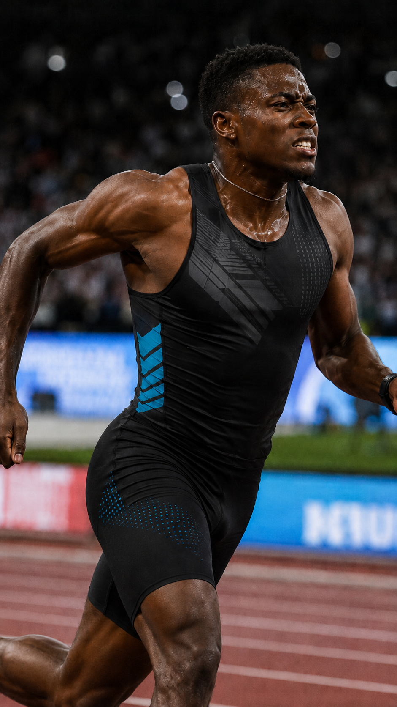

Connect start and finish
Place one iPhone at each point to support timing across two separate locations.
PHOTO FINISH WITH TWO iPHONES
Professional-style timing, on your phones.
Place one iPhone at the start and another at the finish. SprintLens connects the start signal with high-frame-rate finish video so you can inspect the finish frame by frame.


WHAT IS SPRINTLENS?
SprintLens is a sports timing app that connects the start and finish, letting you determine a time from recorded finish video.
It gives teams a phone-based way to review close finishes and practice results that can be hard to judge with a stopwatch alone. It is designed for track, swimming, short sprints, time trials, club activities, and team practice.
FEATURES
Place one iPhone at each point to support timing across two separate locations.
Play the signal from the start-side device and use that moment as the timing reference.
Record the finish to review moments that are difficult to call by eye or with manual timing.
Inspect the video one frame at a time to identify when the athlete crosses the line.
HOW IT WORKS
Set one at the start point and one at the finish point.
Play the start signal while the finish-side phone records high-frame-rate video.
Move through the finish video frame by frame and determine the line-crossing time.
USE CASES
FAQ
A sports timing app that connects two iPhones at the start and finish and uses a start signal plus high-frame-rate finish video to review times.
The start-side iPhone plays the signal while the finish-side iPhone records video. You then inspect that video frame by frame to identify the finish.
It can support practice for 100 m and 200 m races, hurdles, short sprints, time trials, swimming, and similar activities.
No. Accuracy varies with the devices, network, frame rate, and recording conditions.